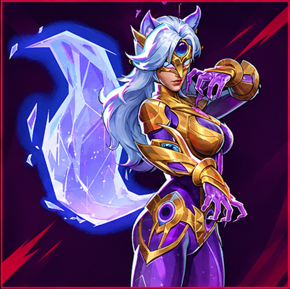
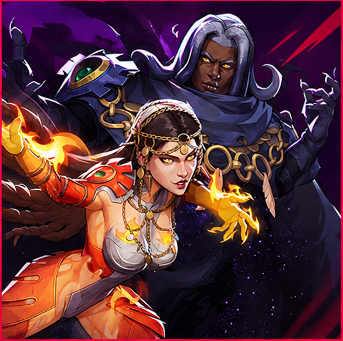
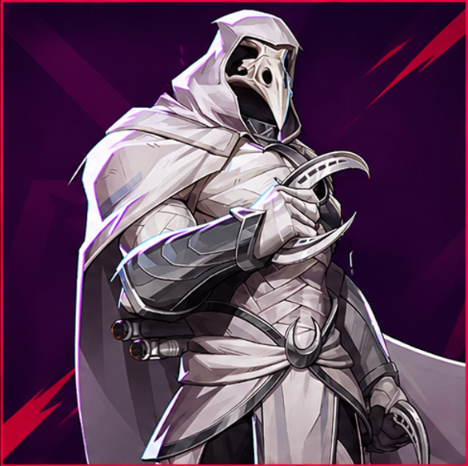
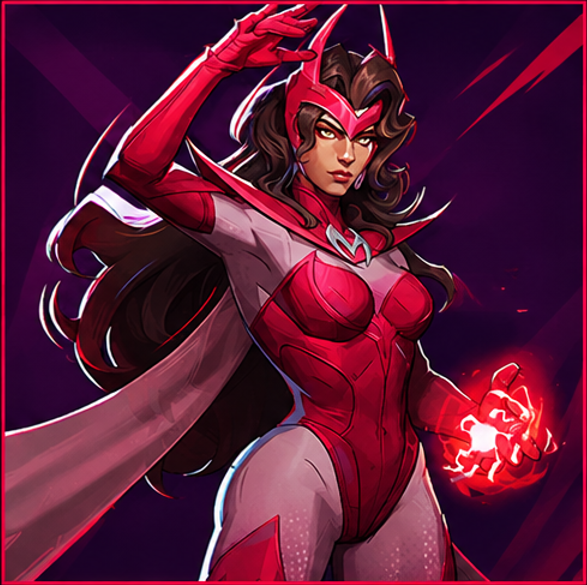
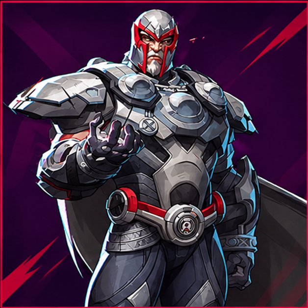
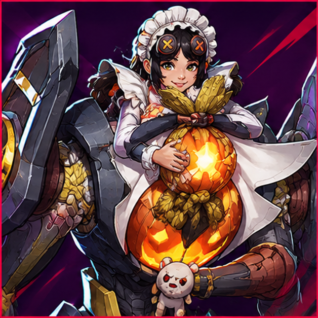

My Marvel Rivals Strike Squad
Marvel Rivals is one of my favorite games to play on my PS5. My Strike Squad is made up of the six characters I main and enjoy playing the most. This isn't my dream team of six characters playing together, but my personal favorites that I like switching between depending on the match. My Strike Squad has two characters from each class. Strategists are healers, also called supports, who help keep their teammates alive. Duelists are DPS, which stands for damage per second in gamer lingo, and focus on dealing damage. Vanguards are tanks who fight on the front lines and help protect their teammates. I like having options because I could play a healer one match and a tank the next. Sometimes I'll start as a tank because nobody else wants to, but if we need more damage output halfway through the match, I can switch to a DPS. That's what I like about having a Strike Squad with different playstyles and abilities.

White Fox
Strategist (Support) | Cosmic Kumiho
White Fox is one of my top three favorite characters. She's a Strategist, aka a healer or support. I love how she can keep her teammates alive while still fighting back. Her Cosmic Kumiho costume is also one of my favorites because of the purple, gold, and glowing fox tail.

Cloak & Dagger
Strategist (Support) | Polarity Bond
I really like Cloak and Dagger because I can switch between healing my team and attacking enemies. Their abilities make them super useful during team fights because they can support everyone while still dealing damage. The Polarity Bond costume is also amazing with its darker colors and fiery effects.

Moon Knight
Duelist (DPS) | Fist of Khonshu
Moon Knight is one of my all-time favorite Duelists, also known as DPS in gamer lingo. He's great at dealing a significant amount of damage from long range, especially when his attacks bounce between enemies. It's so satisfying when everything lines up perfectly. I also love his white hood, mask, and mysterious character design.

Scarlet Witch
Duelist (DPS) | Witch of the Evil Eye
Scarlet Witch has always been one of my favorite Marvel characters outside of the game. She's a Duelist who I think works best at mid to close range. I love using her chaos magic to put pressure on enemies during fights. Her red outfit and magical effects make her look powerful, especially with the Witch of the Evil Eye costume.

Magneto
Vanguard (Tank) | Default Costume
Magneto is my pick for a strong defensive tank. Vanguards are the front-line characters who help protect their team and create space during fights. I like how Magneto can shield his teammates while still dealing damage. His default armor, helmet, and cape already look intimidating, so he doesn't need a fancy costume.

Peni Parker
Vanguard (Tank) | Badlands Lullaby
Peni Parker is one of my favorite Vanguards, especially when defending an objective. As a tank, she can help control the front lines by placing traps and making it difficult for the enemy team to push forward. Her Badlands Lullaby costume is creepy but cute, which makes it even better.